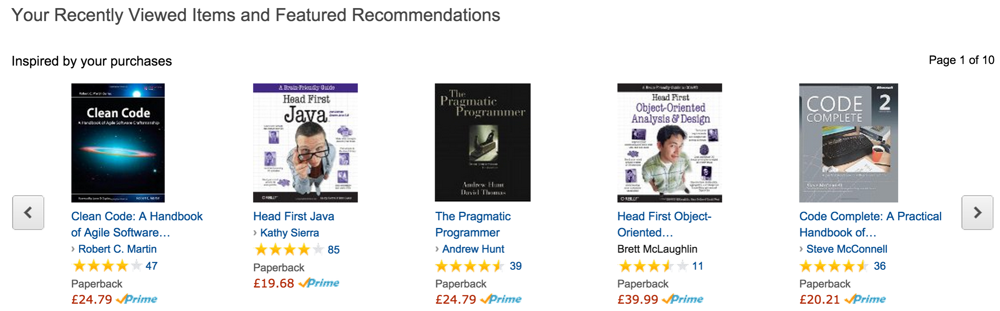

Many companies use recommender systems to suggest products, information, and friends to their customers . In this assignment you will start develop a Movie recommender using existing movie data.
Many companies use recommender systems to suggest products, information, and friends to their customers . These systems analyse usage patterns to suggest what a user would prefer from among a collection of things he has never experienced. For example, fig.1 shows Amazon’s recommendations based on a user’s activity (e.g. other movies they’ve rated etc.).  Recommender systems are big business - recently Netflix ran an open competition for a recommender algorithm. The winners prize was $1 million. In this assignment, you will develop the first part of a Movies recommender program. Unfortunately, there's no cash prize involved :( !
The main aims of this assignment is to write a Java program that can:
You are provided with the following data adapted from MovieLens. You will need to examine the data files and read the README file to design and develop suitable abstract data types to represent the data in your Java program (hint: User, Movie and Rating classes). The Movielens files are in CSV text format - you will have to write your own code that can parse the Movielens data. You will use the following two data sets; a large data set and a small data set. It might be more convenient to use the smaller data set in the early part of development, then move to the larger data set later on. small data set . large data set .
The following code example uses java.util.Scanner to read in a text file line by line, parse the data, and print the data to the standard output:
String delims = "[|]";
Scanner scanner = new Scanner(new File("./moviedata_small/users5.dat"));
while (scanner.hasNextLine()) {
String userDetails = scanner.nextLine();
// parse user details string
String[] userTokens = userDetails.split(delims);
if (userTokens.length == 7) {
System.out.println("UserID: " + userTokens[0] + ",First Name:" + userTokens[1]);
} else {
scanner.close();
throw new IOException("Invalid member length: " + userTokens.length);
}
}
scanner.close();The above code produces output similar to the following:
UserID: 1, First Name:Leonard UserID: 2, First Name:Melody UserID: 3, First Name:Gregory UserID: 4, First Name:Oliver UserID: 5, First Name:Jenna
You will also need to use suitable data structures that will support the functionality of the program.
Develop a serializer that can serialize/deserialize all the data into a single file. You must use a well known external data format such as XML, JSON or both.
Develop a recommender api that provides at least the following interface description. The interface desciption is in the form methodName(parameter list). The parameter list includes required parameters - you can include more if you wish.
addUser(firstName,lastName,age,gender,occupation)
removeUser(userID)
addMovie(title, year, url)
addRating(userID, movieID, rating)
getMovie(movieID)
getUserRatings(userID)
getMoviesByTitle()
getMoviesByYear()
initialLoad(csvFile)
load()
write()A more precise description of the above API will follow and will be discussed in class.
Approx 20% of marks in this assignment is for the testing strategy. You are required to provide the following:
Please submit assignment as a Github or Bitbucket repository. The following are expected to be included:
All code should be internally documented and your repository should contain by a readme file that clearly and concisely explains the features of your program. General marking scheme, including above expectations, is as follows:
Load External Data: 10; Serialiser/deserialiser: 20; Add/Remove Things: 15; Get top 10 Movies: 10; Sort movies by Name, Director, Year: 10 Testing: 20. Code/repository quality: 15